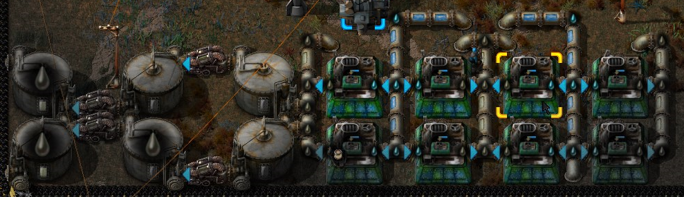
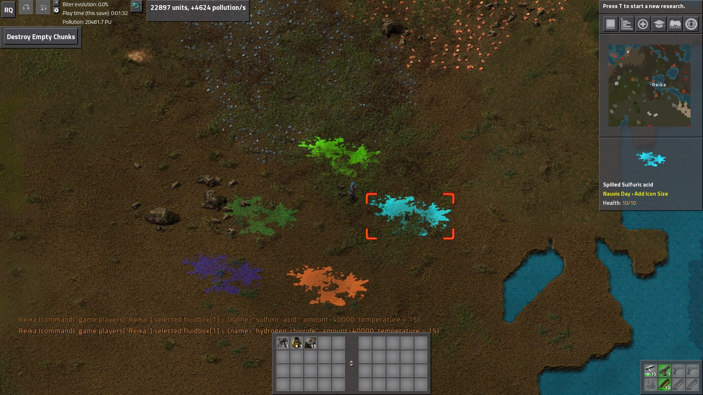
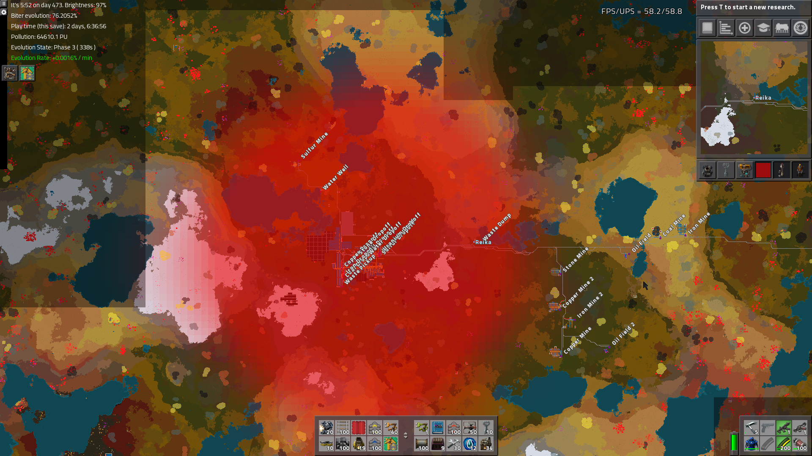
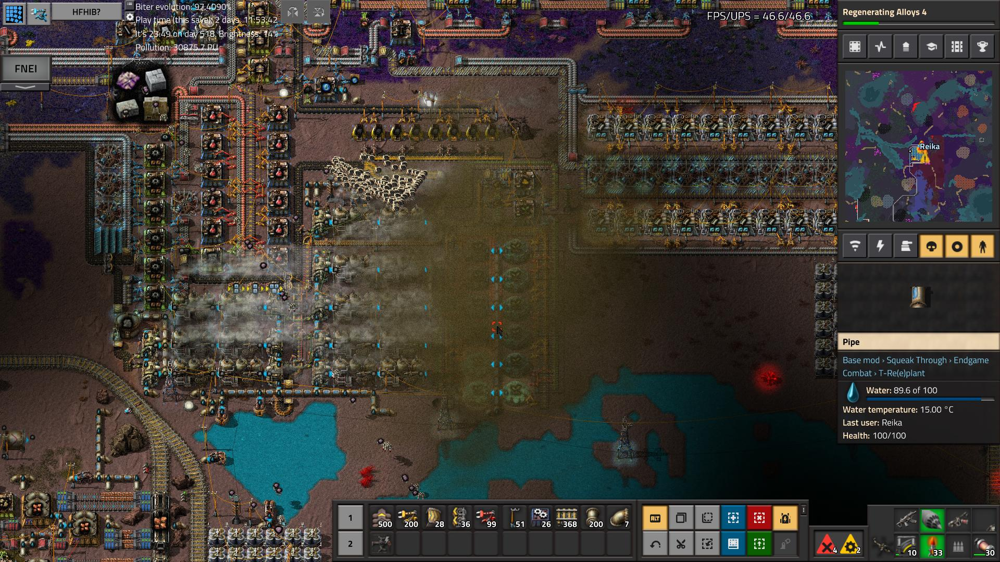
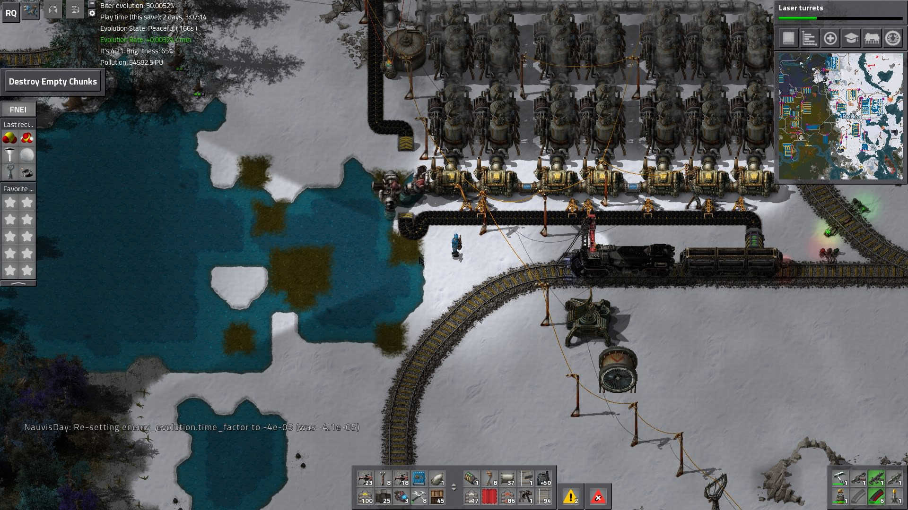
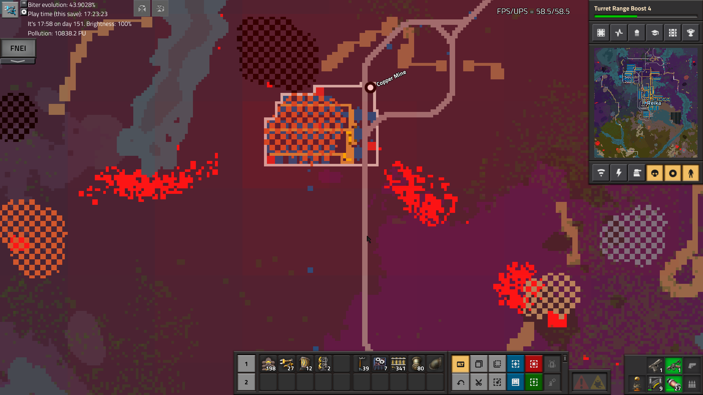
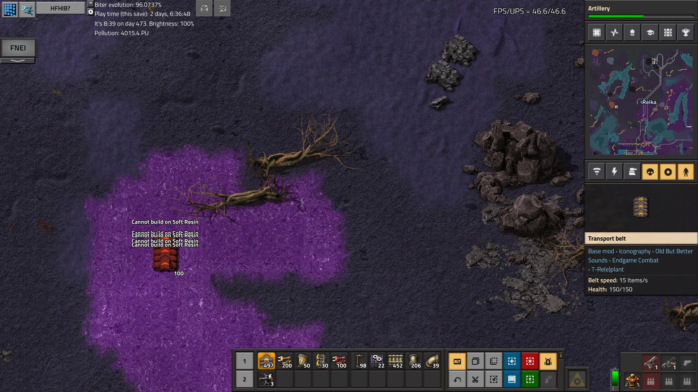
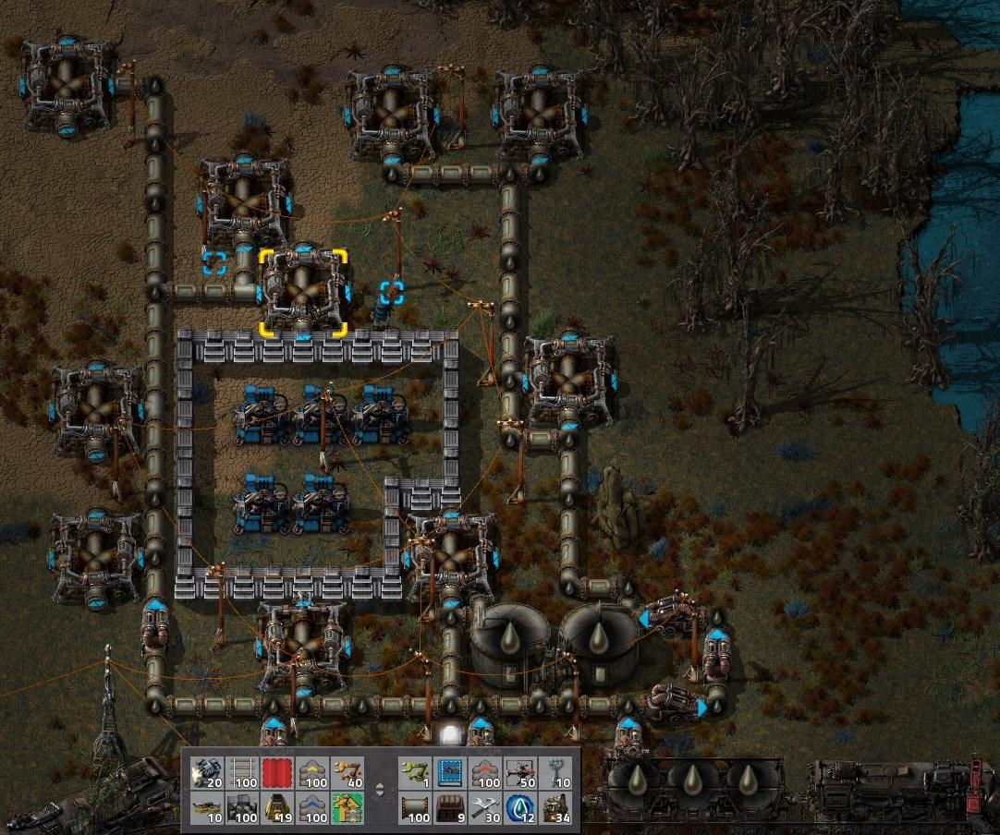
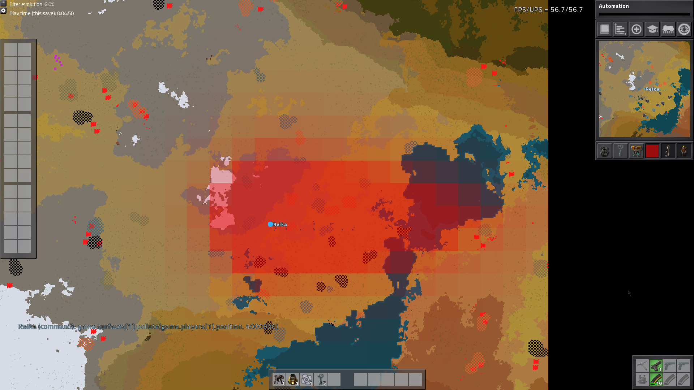

Overview
NauvisDay is a large mod that greatly expands upon the pollution and environmentalism angle of Factorio, and is specifically designed to make the player second-guess common gameplay patterns like clear-cutting and paving entire regions or clearing every biter nest in sight.Pollution
With NauvisDay installed, pollution emissions are much higher, especially for "dirty" operations like burning coal and processing oil. Additionally, spilling liquids on the ground will leave a big patch that slowly evaporates, causing pollution and potentially even damage - with amounts being dependent upon fluid type - as it does so.

Spilled fluids.
Once emitted, pollution spreads much farther across the map. For the same factory, peak pollution levels will often be ten or twenty times higher, and the overall pollution cloud five or more times the diameter. Additionally, the effects of pollution extend far beyond making forests look decayed and triggering attack waves (though both of those will also happen in great quantity). At even moderate pollution levels, clouds of pollution can briefly spontaneously form, harming players and killing tree farms. As the pollution levels rise, those clouds will become more common, more damaging, larger, and longer-lasting. At high pollution, water will become polluted with sludge and become unusable as a supply, and clouds of acid rain can form, damaging factories.

The pollution cloud from an average sized midgame factory.

A pollution cloud killing a treefarm area.

Polluted water and a clogged offshore pump, resulting in steam power shutdown.
Attacks
The size and intensity of the pollution cloud results in an extremely large number of agitated biter nests compared to the base game; even fairly early into progression, very large attack waves of dozens or even hundreds of biters are a common occurrence, and a factory that does not attempt to mitigate its pollution output will be constantly threatened by such attacks.

An ore outpost generating two giant attacks with another already preparing.
Furthermore, should the pollution levels around the spawner reach a critical level, they will create a new kind of enemy, one which will fly over any obstacle towards your defences. Once it reaches them, or upon its death, this "Bomb Fly" will detonate, destroying all walls and turrets in a small area, and leaving behind "Soft Resin" which cannot be built upon until cleared.

Some soft resin.
Evolution
NauvisDay heavily manipulates enemy evolution. Pollution-based evolution works largely the same as before; the more you pollute, the faster biters evolve. Destroying nests also increases pollution, but far more than it does in vanilla; even a couple dozen nests is often enough to push the evolution factor high enough to spawn a new tier of enemy. Additionally, destroying spawners will generate a significant number of new, very angry, enemies.Time-based evolution, however, has been completely redesigned. Unlike in vanilla, its contribution is negative; if you get your pollution under control, and refrain from the destruction of spawners, as time progresses, the biters will actually calm down and devolve. The longer the biters have to do so, the faster this will occur. As a result, you can greatly scale back your production and enter a kind of "standby mode"; given time, assuming this does not continue generating severe pollution, the enemies your defences are fighting will be smaller and fewer in number.
Management
Pollution management and environmentally friendly practices are the core of NauvisDay.The first and biggest step is to not destroy the environment directly; trees and open land are excellent at absorbing pollution - far more so than in the vanilla game - and destroying the forests and paving the terrain will squander that.
You will also have the ability to clean the air directly, passing it through a "Deaerosolization Machine" which dissolves the pollution into water. However, the resulting sludge needs to be dealt with; you can simply re-release it elsewhere, perhaps in a small area far from your main factory, but this will still cause enormous pollution problems in the region. For a more proper long-term solution, you can pump it into depleted oil wells or tectonic fissures (or, later, boreholes dug with a specialized machine), where it will remain in perpetuity.

A small storage facility, made from a depleted oil field.
This sludge can also be chemically processed into useful products (especially with Bob's mods), but this is unlikely to consume enough to make it viable as your sole disposal method.
There are also several clean alternatives to common high-pollution infrastructure. Early on you will unlock the steam furnace, which uses hot steam as its fuel source. While steam will not (yet) be able to be made without some pollution, it will produce far less than its counterpart of stone or especially steel furnaces. Later, you will have the option of a gas-fired boiler, forgoing coal power entirely for - comparatively - very clean natural gas to produce your steam. A clean version of the refinery is also available; while slower, and requiring continual maintenance of exhaust scrubbing materials, it will emit a tiny fraction of the pollution.
In some cases, the pollution dispersion fan can be a great asset; while it does nothing to reduce total pollution, it forces it to spread along an axis, reducing the peak levels, possibly avoiding the effects of a highly polluted area. This of course comes with the caveat of affecting a much larger area than before, possibly incurring yet further enemy attack.

The dispersion fan in action.

A refining area with several cleaning measures in place.
Other Features
The mod comes with a handful of other features to help you manage and react to pollution, including a pollution level sensor - which you can use to toggle high-emissions infrastructure, for example - for the circuit network, a greenhouse, which has weak air cleaning ability and slowly produces wood. There are also custom flooring materials that do not remove the ability for the ground to absorb pollution.Configuration Settings
This mod contains several config options to modify values and behaviors - such as for balance or server safety concerns, or simply personal taste - to your preferences. Note that several settings may have bounds imposed on their values, either logically or explicitly; these can usually be seen in the actual settings files or ingame. These are listed in order found in the source code, which is generally the order in which they were added; They may be present in a different order ingame or in the configuration files.Base pollution factor
Type: doubleCurrent Default Value:
1
Acid rain threshold
Type: intCurrent Default Value:
90000
Water pollution threshold
Type: intCurrent Default Value:
60000
Water recovery threshold
Type: intCurrent Default Value:
30000
Polluted water tile cleanup
Type: intCurrent Default Value:
1000
Water cleanup release factor
Type: doubleCurrent Default Value:
1
Use depleted oil fields for waste storage wells
Type: boolCurrent Default Value:
true
Enable Steam-Powered Furnace
Type: boolCurrent Default Value:
true
Enable Gas-Powered Boiler
Type: boolCurrent Default Value:
true
Bomb Fly pollution threshold
Type: intCurrent Default Value:
10000
Enable Filtered Refinery
Type: boolCurrent Default Value:
true
Steam Powered Furnace Speed Multiplier
Type: doubleCurrent Default Value:
0.8
Filtered Refinery Speed Multiplier
Type: doubleCurrent Default Value:
1.0
Max Attack Size Multiplier
Type: doubleCurrent Default Value:
1.0
Pollution Chemical Processing Consumption
Type: doubleCurrent Default Value:
1.0
Pollution Chemical Processing Yield
Type: doubleCurrent Default Value:
1.0